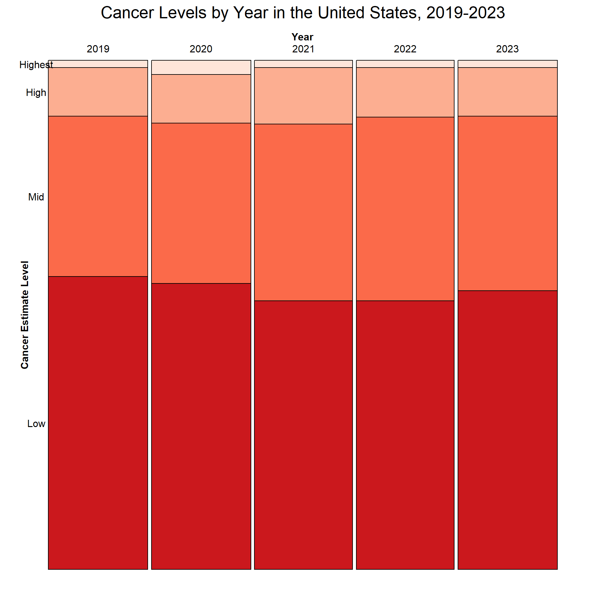

In this map, there are clear regional patterns surrounding the incidence rates of cancer. Much of the western world has very high cancer rates, with the United States, Canada, Australia, New Zealand, and much of northern and western Europe having more than 600 cases of cancer per 100,000 people. By contrast, most African countries have between 0 and 100 cases of cancer per 100,000 people. Asian and South American countries tend to fall somewhere in between these two extremes, though Japan has rates more similar to the West than to the rest of Asia. There are many reasons that could explain this disparity, which we will explore later. Some factors may have to do with lifestyle, or they may have to do with reporting bias. Do countries that have better medical infrastructure catch and report cancer at a higher rate? It is possible. Link to Cancer Incidence Rate Data
3.2 How do cancer mortality rates compare across the world in 2022?
Much like cancer incidence rates, the West tends to have higher levels of mortality from cancer than the rest of the world. However, it is not as stark a difference here. While Canada and almost all of Europe have mortality rates of at least 200 per 100,000 people, some Asian and South American countries have a disproportionately high mortality rate compared to their incidence rate. Most of Africa again has very low rates of death from cancer, though South Africa and Tunisia have higher rates than the rest of the continent. Link to Cancer Mortality Rate Data
3.3 Does the existance of operational policies for cancer and region of the world impact cancer incidence and mortality rates?
library(RColorBrewer)clevelandDotPlot <- PolicyIndicdenceMortality|>dplyr::select(Incidence_rate,Mortality_rate,Value,Country,Continent) |>pivot_longer(cols =!c(Value,Country,Continent),names_to ="RateType", values_to ="Rate" )|>filter(Value!="No response")ggplot(clevelandDotPlot, aes(x=Rate,y=fct_reorder2(Country,RateType=="Incidence_rate",Rate,.desc=FALSE), color =RateType)) +geom_point()+facet_grid(Continent~Value, scales ="free_y",space="free_y",labeller =labeller(Value =c("Yes"="Operational Policy","No"="No Operational Policy"),Continent =c("North America"="N. America","South America"="S. America")))+scale_colour_manual(values=c("darkred","red"),labels =c("Incidence Rate", "Mortality Rate"))+labs(title ="Cancer Incidence and Mortality Rate vs.\nExistence of Operational Policy, 2022", x ="Rate per 100,000 people", y="Country", color ="Rate Type")+theme(plot.title =element_text(size =30, face ="bold", hjust =0.5),axis.title.x =element_text(size =18),axis.title.y =element_text(size =18),axis.text.x =element_text(size =14),legend.text =element_text(size =12),legend.title =element_text(size =14),strip.text =element_text(size =13) )
In this plot, we explore if there are any correlations between Cancer Incidence Rate, Cancer Mortality Rate, Continent, and the existence of a healthcare operational policy in each country. For all continents except for Europe, regardless of the existence of an operational policy, the gap between Incidence Rates and Mortality Rates remains fairly constant. As one increases, the other increases by a similar rate. However, in Europe, for countries that have Operational Policies in place for cancer, the gap between Incidence and Mortality rate seems to expand and shows that Mortality Rate seems to peak around 375 per 100,000 people even though Incidence Rate continues to grow. Countries with incidence rates ranging from 400 to 800 cases per 100,000 all on average have cancer mortality rates that hover in the high 200s to low 300s per 100,000. This could indicate that the countries that have a larger gap between mortality and incidence rate either have more sensitive cancer detection methods, more rigorous cancer treatments available or easier access to healthcare. To further explore this question, we would need to look more into the types of cancer detection methods and treatments and compare access to healthcare for these countries. For example, it would be interesting to compare Denmark and Poland more closely as their mortality rates are similar, but their incidence rates are very different.
Also of note is just how many more countries have operational policies in place than not. There does not appear to be a substantial difference in cancer and mortality rates between countries that have an operational policy versus those that do not. Countries in Africa appear to have the most countries out of any continent not to have an operational policy, though the majority of African countries do have one.
One limitation of this plot is that the rates are from 2022 and the Operational Policy data is from 2021. During the data collection process, we were unable to find rates from 2021 or Operational Policy data for 2022 based on how the data is reported. Therefore, this plot does not represent the same year; however, we chose to move forward with this plot because there is potential for correlation and trend discovery between Operational Policy in 2021 and Rates in 2022 if the Operational Policies do not change. Afghanistan and Lesotho were filtered out of the data since they have no response for Operational Policy and their rates do not add value to the analysis since their rates are the same. Link to Existence of Operational Policy DataLink to Cancer Mortality Rate DataLink to Cancer Incidence Rate Data
3.4 Does the existance of operational policies for cancer and region of the world impact the cumulative risk at age 74 for cancer incidence and mortality?
Code
clevelandDotPlot <- PolicyIndicdenceMortality|>dplyr::select(Incidence_cum_risk_74,Mortality_cum_risk_74,Value,Country,Continent) |>pivot_longer(cols =!c(Value,Country,Continent),names_to ="RateType", values_to ="Rate" )|>filter(Value!="No response")ggplot(clevelandDotPlot, aes(x=Rate,y=fct_reorder2(Country,RateType=="Incidence_cum_risk_74",Rate,.desc=FALSE), color =RateType)) +geom_point()+facet_grid(Continent~Value, scales ="free_y",space="free_y",labeller =labeller(Value =c("Yes"="Operational Policy","No"="No Operational Policy"),Continent =c("North America"="N. America","South America"="S. America")))+scale_colour_manual(values=c("darkred","red"),labels =c("Incidence Risk", "Mortality Risk"))+labs(title="Estimated Cumulative Cancer Incidence and\nMortality Risk at 74 Years of Age, 2022", x ="Risk (%)", y="Country", color ="Risk Type")+theme(plot.title =element_text(size =30, face ="bold", hjust =0.5),axis.title.x =element_text(size =18),axis.title.y =element_text(size =18),axis.text.x =element_text(size =14),legend.text =element_text(size =12),legend.title =element_text(size =14),strip.text =element_text(size =13) )
In this plot, we investigate the cumulative risk of cancer and cancer mortality by age 74 and compare it by country, operational policy and continent. Countries that do not have an operational policy in place have similar risks for dying from cancer at age 74 while the incidence rate varies in this group. In countries with an operational policy, the mortality risk is generally similar across all continents; however, incidence risk seems to be the highest in Europe and some countries in Oceania, North America, and Asia. The trend observed in European countries that have operational policies suggests that there are excellent treatment opportunities or perhaps the cancers that people are at risk for are not as deadly. Though the risk of getting cancer in Europe appears higher than most other continents, the mortality risk is similar. The previous statement would need to be investigated further to understand the exact cause of this relationship. In Africa, countries that have existing operational policies show a small gap between mortality and incidence risk. Just like in the last graph, there does not appear to be a big difference between countries that have operational policies versus those that do not. The bigger dividing line appears to be continent.
cancer_exp_phy_2015_2022 |>select(continent, Incidence_rate, Mortality_rate, avg_phy_rate, avg_pct_gdp, avg_pct_domestic_spending) -> merged_subsetcolnames(merged_subset) <-c("Continent", "Incidence (per 100k)", "Mortality (per 100k)", "Physicians (per 1k)", "% GDP on Health", "% Domestic HC Spending")ggpairs(merged_subset, columns =2:6, aes(alpha =0.5, stroke =0))+labs(title ="Relationships Between Cancer Incidence, Mortality,\nHealthcare Spending, and Number of Physicians, 2015-2022")+theme_minimal(16)+theme(plot.title =element_text(size =20, face ="bold", hjust =0.5),axis.text.x =element_text(size =11),axis.text.y =element_text(size =11) )
To see which factors may influence cancer incidence and mortality rates in each country, we will look at the number of physicians per 1,000 residents, the percent of a country’s GDP that goes towards healthcare expenditure, and the percent of a country’s total domestic spending that goes towards healthcare expenditure. Since we have incidence and mortality rates for the year 2022 and we have inconsistent data, reported for a variety of years, across countries for physician counts, GDP, and domestic spending, we will average the physician counts, GDP, and domestic spending across 2015-2021, which is the most recent data we have and the smallest range we can include that still encompasses the vast majority of countries. It will not be an exact one-to-one comparison, but it is still a similar time period, and it is the best estimate we can create given the data we have access to.
We see in the above graph that all five of the variables are right-skewed, with modes tending towards the lower end of the spectrum. The most common incident rate is around 100 per 100,000, most common mortality rate is slightly above 50 per 100,000, most common physician rate is less than 1 per 1,000, most common percent of GDP spent is around 5%, and most common percent of total domestic spending is slightly below 10%. We also see that incidence rate and mortality rate are very closely related, having a strong positive correlation of 0.946, which indicates that countries with higher rates of cancer also have higher rates of death from cancer. Interestingly, the incidence rate of cancer also has a positive correlation with the number of physicians operating in the country (0.785) and with the percentage of a country’s money spent on healthcare (0.624 for GDP, 0.624 for domestic spending). While correlation does not equal causation, one potential reason for this is that with more investment and more doctors working in a country, there are more opportunities to discover cancer. Mortality rate is also positively correlated with each of these three measures, though GDP spent and domestic spending are not as strongly correlated as they are with incidence rate.
3.6 How do cancer incidence rates compare to number of physcians per country and cancer mortality rates?
Code
#scatterplot of incidence rate vs. doctor rateggplot(data=cancer_exp_phy_2015_2022, aes(x=avg_phy_rate, y=Incidence_rate, color=as.factor((mortality_rate_categorical))), na.rm=TRUE)+geom_point(na.rm =TRUE) +labs(x="Average Physician Rate (per 1000)", y="Cancer Incidence Rate (per 100k)", color ="Cancer Mortality\nRate (per 100k)", title ="Cancer Rates vs. Number of Physicians by Country, 2015-2022")+scale_color_brewer(palette ="YlGnBu",na.translate =FALSE) +theme_minimal()+theme(plot.title =element_text(size =14, face ="bold", hjust =0.5) )
Looking more closely at the relationship between cancer incidence rate and the number of physicians in a country, we can see that as a country has more physicians per 1,000 people, the rate of cancer increases. The data is more concentrated at the lower end of the spectrum - countries with almost no doctors also have almost no cancer reported. The data fans out as the number of physicians increases. At one extreme, one country (Cuba) has more than 8 physicians per 1,000 people and about 450 cancer cases per 100,000, while Japan has just 2.6 physicians per 1,000 people but a cancer rate of 800 per 100,000. We can also see clearly with color here that countries that have higher cancer rates and more physicians tend to have higher mortality rates, showing again just how correlated these factors are. Link to Cancer Incidence Rate DataLink to Health Expenditure by CountryLink to Health Personnel by Country
3.7 Are there any impacts on cancer incidence rate as a result of physicians per country and % GDP spending?
Code
mosaic(incidence_rate_categorical_4 ~ avg_phy_rate_categorical_2 + avg_gdp_categorical_3, direction =c("v", "v", "h"),data = cancer_exp_phy_2015_2022, highlighting_fill =brewer.pal(4, "Reds"),rot_labels=0,labeling_args =list(set_varnames =c(avg_phy_rate_categorical_2 ="Physicians per 1k",incidence_rate_categorical_4 ="Incidence Rate (per 100k)",avg_gdp_categorical_3 ="% GDP Spending")),main ="Cancer Rates by GDP Spending and Physicians")
Looking at how the cancer rates, percent of GDP spent on healthcare, and the number of physicians in the country relate, we can see some stark differences. Overwhelmingly, countries that spend less and have fewer doctors have lower rates of cancer. More than half of countries that spend less than 5% of their GDP and have 0 to 2 physicians per 1,000 people have fewer than 100 cancer cases per 100,000. No country under these parameters has a cancer rate above 300 per 100,000. Notably, the limited number of countries that spend more than 10% of their GDP on healthcare but have 0 to 2 physicians per 1,000 people all have a cancer rate of less than 100. Contrarily, in countries with more than 2 physicians per 1,000 people, the cancer rates are much higher, regardless of how much they spend on healthcare. On top of that, as these countries spend more of their GDP on healthcare, the cancer rates increase even more to the point that every single country that has more than 2 physicians per 1,000 people and spends more than 10% of their GDP has a cancer rate of 300 or more per 100,000. The overwhelming majority of countries with 2 physicians per 1,000 that spend between 5-10% of their GDP also have cancer rates of more than 300 per 100,000. While this mosaic plot demonstrates a relationship between both GDP spending and cancer rates and number of physicians and cancer rates, it makes plain that the number of doctors has a much stronger relationship with cancer rates than the percent of a country’s GDP that is spent on healthcare.
3.8 How do cancer incidence rates compare to domestic healthcare spending and cancer mortality rates?
Code
ggplot(cancer_exp_phy_2015_2022, aes(x=avg_pct_domestic_spending, y=Incidence_rate, color=mortality_rate_categorical))+geom_point(na.rm =TRUE) +facet_wrap(~continent, ncol =1)+labs(color ="Mortality Rate\n(per 100k)", x="% Domestic Spending", y="Incidence Rate (per 100k)", title ="Cancer Rates by Domestic Healthcare Spending, 2015-2022") +scale_color_brewer(palette ="YlGnBu",na.translate =FALSE) +theme_minimal(16)+theme(panel.grid.major =element_line(linewidth =0.2, color ="black"),panel.grid.minor =element_line(linewidth =0.1, color ="black"),plot.title =element_text(size =14, face ="bold", hjust =0.5))
Europe is very apparently the standout continent. Most countries in Europe spend between 10 and 20% of their total domestic spending on healthcare, have cancer rates of 400 to 800 people per 100,000, and have cancer mortality rates of 250+ per 100,000. This is far higher on average than any other continent. Africa falls on the other end of the extreme, with most countries having fewer than 200 cancer cases per 100,000 people, spending less than 10% of domestic spending on healthcare, and mostly having cancer mortality rates of less than 100 per 100,000 people. Asian and North American countries show more variation across these three metrics. There are Asian countries with incidence rates as low as 58 and as high as 800 per 100,000 people, with mortality rates as low as 26 and as high as 339 per 100,000, and with domestic spending as low as 2% and as high as 23%. Interestingly, Japan is the highest Asian country in all 3 of these categories. Also of note is how South American countries are similarly compact in their level of domestic spending as European countries, with almost all falling between 10% and 20%, yet their incidence and mortality rates are far lower than Europe’s. It goes to show that while there does appear to be a positive correlation between domestic spending and incidence rates, there are clearly other factors at play too.
There are very clearly two distinct clusters in the data: Africa (in red) and Europe (in green), identifying the same trend that has been emerging in some of the other graphs so far. African countries tend to be clustered together towards the bottom of most of these factors, including physician rate, incidence rate, and mortality rate. European countries tend to be on the upper ends of many categories, particularly with incidence rate, incidence risk, and mortality rate. Countries in the other four continents do not fall into any clear clusters, indicating that they have more variation within them. Moreover, while variables like incidence rate and mortality rate tend to have clustering at the extremes, factors like percent of domestic spending on healthcare and percent of GDP spent on healthcare do not exhibit such stark distinctions. Interestingly, while incidence rate, incidence risk, and mortality rate tend to have many countries on the high end and low end with fewer in the middle, many countries coalesce towards the center when it comes to mortality risk.
3.10 How are estimated percentages of cancer in the US proportioned over the years 2019-2023?
Code
library(vcd)library(grid)AllCancerData_lumps <- CDC_AllCancerData |>mutate(Estimate_Level =ifelse(Estimate>30,"Highest",ifelse(Estimate>20, "High",ifelse(Estimate>10,"Mid", "Low"))))AllCancerData_lumps$Estimate_Level <-factor(AllCancerData_lumps$Estimate_Level) |>factor(levels=c("Highest","High","Mid","Low"))vcd::mosaic(Estimate_Level ~ Year,data = AllCancerData_lumps,direction =c("v", "h"),rot_labels=0,highlighting_fill = RColorBrewer::brewer.pal(4, "Reds"),labeling_args =list(set_varnames =c(Estimate_Level ="Cancer Estimate Level")),main ="Cancer Levels by Year in the United States, 2019-2023")

Between 2019 and 2023, the proportions of groups that have low, mid or high percentages of cancer are generally the same. The Low category represents that less than 10% of people have cancer in a given group, while Mid corresponds to greater than 10% and less than 20%. Finally, the High category corresponds to greater than 20%, but less than 30%, and the Highest group is greater than 30%. In this data, the highest percentage of a group that has cancer is 32.6%, which results in even bin intervals for the data. While there is a slight decrease in the proportion of groups that are in the Mid percentage bin across the years, we see cancer percentages across groups are generally of equal proportions. While we are not tracking individual groups in this plot, we are able to see how proportions of cancer percentages vary over the years as a whole. From this graph, we can see that we will need to investigate individual groups more closely to identify where the differences come from.
One limitation of this data is that we are comparing the estimates across different groups and some individuals may belong to multiple groups; however, the reported data does not show where individuals are repeated.
3.11 How do estimated cancer rates compare by group and subgroup in the US from 2019-2023?
Code
library(parcoords)CDC_CancerData_groups4 <- CDC_AllCancerData |>mutate(Subgroup =ifelse(Group=="Health insurance coverage: 65 years and older", paste(Subgroup,"(Above 65yo)"), ifelse(Group =="Health insurance coverage: Younger than 65 years", paste(Subgroup, "(Below 65yo)"), Subgroup)))|> dplyr::select(Group, Subgroup,Estimate,Year)|>pivot_wider(names_from=Year,values_from = Estimate)|>na.omit()|>rename(Y2019="2019",Y2020="2020",Y2021="2021",Y2022="2022",Y2023="2023")|>dplyr::select(Group, Subgroup,Y2019,Y2020,Y2021,Y2022,Y2023)|>filter(Group %in%c("Race","Sex","Age groups with 65 years and older","Region", "Urbanicity","Poverty level","Employment status", "Disability status")) |>mutate(Subgroup =ifelse(Subgroup=="American Indian and Alaska Native and White", "AmInd, AlsNat",ifelse(Subgroup=="Medium and small metro","Med/Sm Metro", ifelse(Subgroup=="Nonmetropolitan","Nonmetro",ifelse(Subgroup=="Large central metro", "Lg. Central Metro", ifelse(Subgroup=="Large fringe metro","Lg. Fringe Metro",ifelse(Subgroup =="65 years and older", ">65 years",ifelse(Subgroup =="<100% FPL", "Low FPL",ifelse(Subgroup =="≥200% FPL", "High FPL", ifelse(Subgroup =="100% to <200% FPL","Mid FPL",ifelse(Subgroup =="Not employed but has worked previously", "Unemployed",ifelse(Subgroup =="Not employed and has never worked", "Never Employed" ,Subgroup ))))))))))))|>mutate(Group =ifelse (Group =="Age groups with 65 years and older", "Age Groups", Group))parcoords(CDC_CancerData_groups4, rownames =FALSE, brushMode ="1D-axes", reorderable =TRUE, alphaOnBrushed =0.1, autoresize =TRUE,queue =TRUE,color ="red",margin =list(left =150),elementId="new2")
Part of our research questions were to investigate cancer rates among Race, Poverty Level, Sex, Disability Status, Age Groups, Employment Status, Region and Urbanicity.
There appear to be minimal differences in subgroup cancer estimates in the following groups: Urbanicity, Sex, Region and Poverty level.
Cancer rates by age groups vary greatly. While within each age subgroup, the cancer estimate remains relatively the same across the years, older groups have higher and higher estimated cancer rates. In the Race group, the White and American Indian, Alaska Native subgroups have higher cancer rates than Asian only or Black only. It would need to be investigated if the sampled population has different levels of access to health care or if this is a result of systemic policies in the healthcare system. Those who are in the unemployed (has worked previously) and not employed categories have higher rates of cancer than those in the never employed, full-time and employed categories. The difference between not employed and unemployed (worked previously) is unclear in the data source. The individuals who have a disability have the double the cancer as those without a disability.